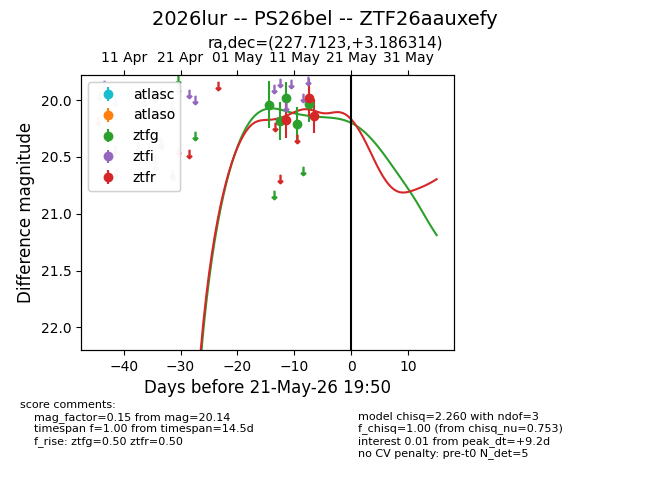
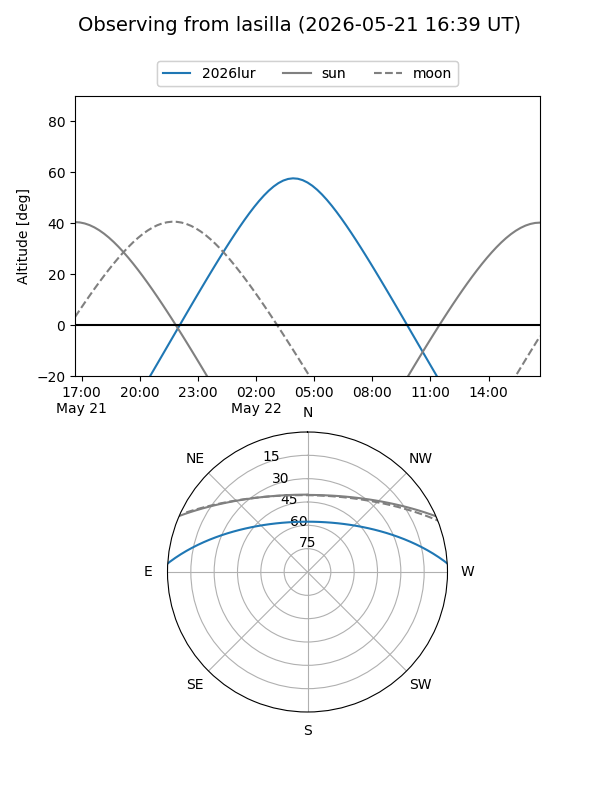
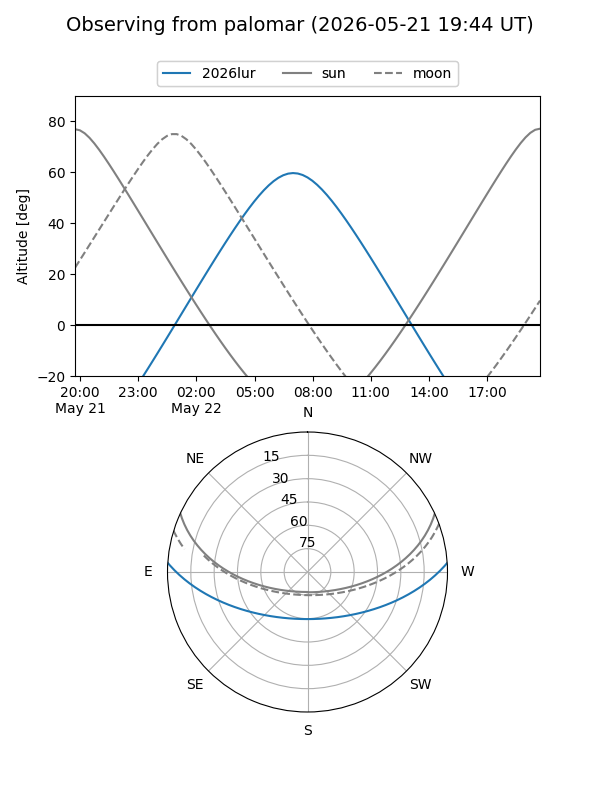
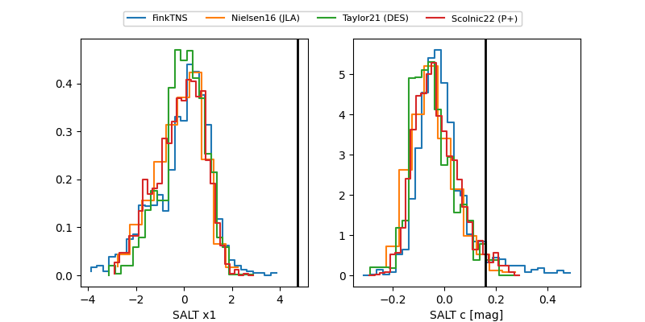

2026lur
Target 2026lur at 2026-05-21 19:52
Aliases and brokers:
lsst-FINK: link
lsst-Lasair: link
lsst-ALeRCE: link
ztf-FINK: link
ztf-Lasair: link
ztf-ALeRCE: link
TNS: link
YSE: link
alt names
ZTF26aauxefy (ztf,fink_ztf)
2026lur (tns,yse)
PS26bel (panstarrs)
Coordinates:
equatorial (ra, dec) = 227.7123,+3.18631
equatorial (HMS+DMS) = 15:10:50.95,+03:11:10.73
galactic (l, b) = (3.3315,+48.98697)
Flags:
Photometry:
last ztfg=20.03, ztfr=20.14
5 ztfg, 3 ztfr detections
Lightcurve

Visibility


Additional plots
